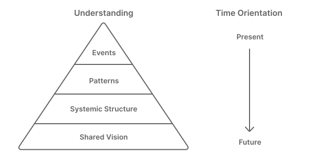
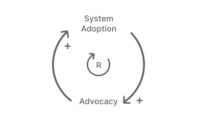
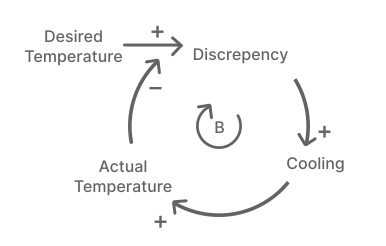
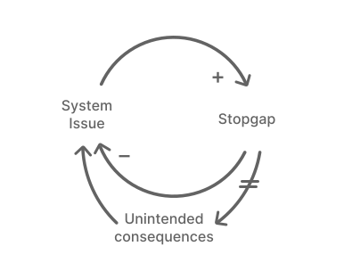

I would like to start by acknowledging the fact that this post is incomplete and represents only my limited knowledge of systems analysis. The ideas I present here might be skewed and in some cases, rather abstract. This is partly because if I were to put these concepts into more concrete forms they lose a kind of universality that this article seeks to outline.
I also recognize that this way of modeling systems assumes certain organizational structures exist inside a company that can support this methodology. This includes not only the mechanisms to collect data about the system behavior, but a team (or teams) with the time to dedicate toward understanding the behavior of the design, product, and engineering teams using the design system. It also assumes that these organizations are at a level of scale and complexity large enough to warrant even worrying about this type of thing. I'm not entirely convinced that the costs outweigh the benefits for smaller organizations, specifically because so much of what this article discusses is already sort of tacitly understood by at least some people in the org. But that doesn't mean there isn't something to be gained by rising the ocean of understanding across the board.
This article's thrust is to outline the broad strokes of systems analysis and how it relates to design systems in a way that is helpful without having to go full boar into complex system modeling or theories that aren't immediately applicable to a design organization. While it's all very fascinating, there just isn't enough space in this article to dedicate to going into the nuance. It's my hope instead that this article inspire teams to have rigorous discussions about how their design system structure is influencing behavior, and identify ways to use design systems better to reach their goals.
TLDR: Systems give us a better understanding of the how complex, interconnected, nonlinear parts behave. If we can model it, we can use it to make better decisions in the future.
Let's assume, for the sake of argument, that you already have a design system. Fabulous. As the overall complexity of that design system grows over time, it will become more and more necessary to get a better handle on exactly what the hell people are doing with it. Are your design systems actually effective at solving problems? Are you actually reaching the goals you set out to achieve? And just what are those goals, anyway? Is it to build faster and more consistently — or is that really just more of a rule or requirement you need to fulfill in order to keep the thing standing up in the first place?
All of these questions are tied up in the operational complexity of whatever organization your design system aims to serve. It could be a team or 5 for an individual surface or a team of 500. It doesn't really matter - at some point it becomes difficult to make improvements to how your design system operates without having a baseline to measure from — to have some indication one way or another if your design system is trending the organization toward its larger goal. We can't predict the future, but we can envision it, and the greater understanding we have of the world in which our design system sits and the behavior of the people who act upon it, the better decisions we can make about how to structure it, communicate it, and scale it so that it provides the most value and the least stress.
Once we understand how the system is structured and how it behaves, we can shift from asking questions like "Is it okay for dialogs to be scrollable?" and instead spending more of our time asking questions like "What role should design systems play in improving product quality?". These types of questions have longer lasting, broader impact than any single event or pattern of events could because they're necessarily future-oriented. The amount of leverage we can enact on the system goes up as we become more future oriented.

Design systems are far more than the product they export. They are educational programs and support networks, bug reporting channels, experimental projects, and so on. And there are actors in that system that will do things with that design system that we might not expect. Our ability to recognize and respond to behaviors we don't expect can impact our ability to design design systems that are resilient - systems that can grow and evolve as the company, its goals, and the people who are a part of it grow and evolve.
I'll be exploring these ideas through the lens of system analysis, which is a branch of systems theory. This was all highly inspired by a book called Thinking in Systems from Donella Meadows. That book is an excellent crash course into systems theory. And many of the examples I'll use to explain some basic concepts of systems are pulled from that work or others like it. Not all my examples are directly related to design — and that's okay. Where possible, I will illustrate concepts by using simple systems with which we are all already familiar.
A system is a collection of interconnected, organized elements that work together to produce patterns of behavior over time. E.g. A highway is a system of roads and signs and ramps organized for the purpose of maximizing efficient travel. Systems can be embedded inside of systems, so a traffic light is a subsystem within that larger road system. The individual traffic lights go on and off in a specific order and pattern that we can model. The signal's individual behavior acts on the larger roadway and the people that use those roads. The fact that they are a system isn't the interesting part — the interesting part comes into play when we understand how those individual parts of the system work together to do something meaningful. e.g. How does the addition or subtraction of a single traffic light effect congestion? We encounter all kinds of systems on a daily basis, we just don't often think of them as such. Every person you've ever met is a system of hundreds of little tiny systems all working together to help us breathe and eat and go about our days.
Systems theory is the study of how systems are structured and why they do whatever it is they do by understanding their parts, relationships, and behaviors that emerge from them. If we can model a system, we can use that model to gain another perspective that can help us identify root causes to problems and in turn make better decisions. We can expose the model to rigor. We can find the places where it breaks down or find critical relationships that aren't immediately obvious.
One of the fundamental flaws with systems analysis is that a model of a system is just that - it's only a model, and that model is going to be imperfect. Often, the world in which these models live and breath is a curving set French curves of relationships that swirl and bend back on themselves in complicated ways. They are dynamic and experience perturbations we never expected and can't account for, but the better we understand a system's structure at its basic level, the more equipped we are to understand it at its most complex.
Not everything is a system, mind you. That pile of junk in my filing cabinet drawer - not a system, no matter how much I might try to convince you that it's an "organized mess". There are a collection of elements, sure, but they are neither connected to one another nor are they in a state of change. Nothing acts on them and they don't cause anything else to change, either. Systems have a common set of identifiable elements we can model and a set of behaviors acting on that system. Let's get a little glossary going so we don't have to fuss with what all these things mean as we get going. If you are already familiar with systems theory, you might find some of these explanations fairly reductive, but it'll give us some common ground to work our way up from:
Okay, so stocks are the quantifiable stuff of a system, the inventory or goods (though they don't need to be physical. Stock may also be things like physical energy, or patience).A stock is the bedrock of a system. Stocks in a design system might be the number of designers, engineers, and content strategists your design system is consumed by. It's the org budget, the headcount. It's also the number of people maintaining the system, the number of components, the footprint of products it supports, the amount of time available in a given week to maintain it, and so on.
When considering design systems, we often over-index on the volume of our stocks, e.g. the number of components in the design system, for instance, and underweight the value in managing the flows that feed those systems. It's easier to make decisions based on adoption than it is to make decisions based on the rate of divergence.
If we can understand what stocks exist in a design system and what flows influence those stocks, what goals we aim to reach by managing these feedback loops, and what rules govern those goals, we can start to form strategies on how to best manipulate our systems to reach those goals.
Flows are actions which cause a stock to increase or decrease over time. Flows can either be inflows, actions which cause a stock to increase, or outflows, which cause a stock to decrease. Once we have a single flow and two stocks, we have the beginning of a relationship in that system. For example: the more births there are, the more the population increases. There is an inflow relationship between births and population. But there's more going on here, too — the greater the population, the more potential there is for more births. So there is another inflow arrow going in the other direction, too. Be apprised that inflows and outflows are often not in sync with each other, and when flows are out of balance, stocks can change. For instance, the rate of bugs incoming could easily exceed the rate at which they're being fixed.
When flows change, stocks tend to be a lagging indicator of that change. Stocks have a momentum, and tend to either grow or shrink. A change in the flows can only go so fast. Even if a radical change in the flows happens, it may take time for the stock to reflect that change in any meaningful way, especially if a stock is being fed from multiple flows at once. Having an awareness of what causes flows to change can serve as an early indicator for stock shifts.
Feedback loops are flow of causal connections that a stock is dependent on. Often feedback loops are flows of information about a stock that leads to a decision that influences the stock. Simply put, it's a cause-and-effect loop. Feedback loops come in several flavors depending on the behavior that they exhibit.
A reinforcing feedback loop is one that creates more of a stock. It amplifies a signal. The more adoption there is of a design system in an organization, the more people advocate for its merits, and in turn the more adoption it gets. Likewise, the more attrition there is in an org, the lower the morale is, the more people leave, and so on. Reinforcing feedback loops are self-perpetuating. Unchecked, these loops can lead to exponential growth or collapse. This can be either good or bad depending on which behavior the loop is reinforcing.

A balancing feedback loop is one that neutralizes or balances out whatever flow is imposed on it. Balancing feedback loops are inherently goal seeking - which means that they always have a desired state they want to be in and seek to bring the system into that desirable range. Take a cup of coffee for instance. What the coffee wants, the coffee's goal, is to be the same temperature as the room it sits in.

The greater the discrepancy between a balancing loop's goal and the actual level, the faster it moves toward that goal. So in our coffee example, the hotter the coffee, or the colder the room, the faster the coffee will cool.
When you're dealing with multiple feedback loops, most of the time one loop is more dominant than the other. Sometimes these relationships can change over time, causing dominance relationships to shift. What's interesting to look at here is what the driving factors are between shifts in flows. Identifying these shift points and the factors that influence them can help you spot when a change in the system might be coming, and can help you prepare for it.
Delays are exactly what they sound like: information not getting its message back into the system in a timely enough manner to affect change in the preferred way. There are more than likely delays in every feedback loop you encounter. They could be as short as minutes and as long as months of even years. Let's save a few words and look at a diagram that shows how delays impact feedback:

In the example above, a symptom of a larger system problem arises, and a short-term stopgap solution is implemented, which alleviates the system problem. However, a delay exists (shown as a double bar through a flow) between when a fix is issued and the downstream unintended consequences of that change that cause the issue or similar ones to come back. Strictly speaking, this diagram could have more delays that would impact timing. There could (and almost certainly would, let's be honest) be a delay between when a system problem was identified and when a solution was decided and implemented. The larger these delays are in a balancing loop, the greater the discrepancy between the inflow and outflow for that stock.
Resilience is a measure of a system's ability to respond and adapt to changing conditions over time. When a sudden shock happens, are the systems that we've designed ready to absorb a deviation and still accomplish the same goals?
Too often, the systems we are trying to build and maintain are too optimized for delivery. While this might have ensured we're being as efficient as possible with our time and energy, it also means we might not have managed enough for when shit hits the fan. This is often because the systems we design typically only really account for linear, incremental change. We don't take into account the possibility that radical, revolutionary change will happen. Optimization and resilience are always in a state of tension, because the more we optimize highly complex design systems for a particular workflow goaled around delivery within a given set of organizational structure and design patterns, the less resilient those systems become.
Now that we have a basic set of vocabulary we can really get started. The great thing about systems thinking is that similarly modeled systems tend to exhibit similar patterns of behavior, too. Bearing that in mind, let's talk through a few principles that tend to underpin systems.
Knowing which aspect of a design system is the limiting factor is somewhat tricky. Depending on how the design system is maintained, it could be more or less related to staffing or time allocation for the maintainers. Identifying which aspects of your team structure have the greatest impact on your ability to control the health of your design system will help you understand where to put your effort. A dip in these resources can also serve as an early warning sign of systemic problems. A tree without sunlight won't grow, no matter how healthy its roots are. If there's no one around to maintain a design system, it doesn't matter how complete it is: it will slowly wilt.
Changing out the total set of components in a design system does not have much effect on whether or not it is a system. It might not even have much of an affect on how the system is maintained. Likewise, changing the maintainers of that system doesn't really change whether or not there is a design system. The aspects of the system that are constantly in flux don't tend to be the parts of the system that have a major impact on the system as a whole.
If the system has a way to create self-perpetuating behavior, you have a reinforcing feedback loop. The greater the adoption of your design system across the company, the easier it is for others to adopt it too, so the more they do, ad infinitum. The opposite is also true — the less adopted your system is, the less incentive there is to adopt, the more people diverge from the system, and the less overall adoption it has as a result. If stability is your aim, reinforcing loops need a balancing loop to bring the system back into equilibrium. Often this won't just be a single loop, but a set of many loops all working together.
Oscillations occur when decisions that impact inflows and outflows are made with incomplete information due to delays in feedback loops. Oscillations and delays create an unnecessary lack of stability in a system. A wild oscillation can cause overshoots in stocks, while large delays can cause a total collapse of a stock. You can determine which delays are important to focus on by understanding which oscillations most affect the system goals and then monitoring the delays that cause those oscillations
This idea, coined by economist Herbert Simon, states that people tend to make the best decisions they can with the information they had available to them at the time. But nobody has complete information, especially in a complex system. And our biases impact our ability to make rational decisions even with the information that we do have. That being said, if we know bounded rationality exists, we can plan and account for it by getting the right information to the right place at the right time so that each individual part of the system acts in a way that builds up a pattern of behavior that's beneficial to the system as a whole.
System archetypes are behavioral scenarios common across many systems.These are some of the patterns that may be common to experience in design systems, though there are several others.
When some aspect of the system fails to reach its goals, it sets subsequent goals lower and lower over time. In subsystems, this has a ripple effect throughout the entire system. A team might start with a goal of having 100% compliance with a design system and then misses that goal. The next time around, it slowly erodes to 80%, then 60%, and so on. People tend to focus on the negative - so missing their goals by a little feels worse than how good they would have felt if they had reached their goals easily. Common excuses emerge to justify the eroding goals. "What did you expect" or "Nobody is perfect" or "We can't be too hard on ourselves here". To fight this, don't let up on your goals, no matter what the performance is. Try to instill a reinforcing feedback loop that works to counter the eroding goals by championing wins. That will invert perceptions so that folks are incentivized to work harder and harder the better things get rather than focusing on working less and less when things go wrong.
Subsystems may eventually run into resource limits that prevent it from further growth, even if it hasn't yet reached its goal. You might have a goal of 100% adoption, but can't seem to provide enough support to individual teams to empower the last 10% of people to finally adopt. You can avoid these limits to growth by examining growth loops and identifying potential limitations to that growth before the system runs up against them.
If the goal you're seeking isn't well defined, or isn't properly measured, it's possible that your system will be optimized to realize an outcome that's more in line with what you measured, rather than what you expected. There's that old Eisner quote — “Not everything important is measurable, and not everything measurable is important.” If your incentives are based on quantity, you might end up with growth, but not progress. Focus on clarifying what your goals and vision for the system are before asking others to act on it.
A model of a design system will be different for every organization. They'll be impacted by the teams that manage them, the complexity of the system and the applications it needs to support, the programs and support that underpins that system, and the processes and feedback loops that grow and shrink that system. There will be delays in feedback loops that impact the system's ability to respond to business change. Understanding this model and the goals of the system can expose opportunities to restructure the system to better align goals and influence a set of behaviors.
Paradigms are the things that goals and structure emerge from. What does your culture consider to be the source of truth for a design system — the code or the design assets? Structures, goals, rules, and feedback loops will be dramatically different depending on where your organization stands on this issue. While it's not easy to change paradigms on a societal or cultural level quickly, it's important to know what game you're playing. Understanding these paradigms also gives your team an opportunity to buck convention in search of a model that transcends the status quo.
The lack of information in a feedback loop, or delays that prevent people from getting the information they need to make informed decisions that impact the system can be one of the biggest factors causing a system to perform below our expectations. By providing the right kind of information to people who need it, it's easier to increase accountability. Often a failure to keep feedback loops between subsystems open is how this breaks down. This can lead to a Prisoner's Dilemma, where failure to cooperate leads to a worse outcome, even when the cost of cooperating (maintaining that feedback loop) seems expensive. Plan out how information will flow through your system and what type of delays you expect to have as a result. Identify where oscillations could occur.
Systems that have ways to allow subsystems to adjust in light of new conditions are better equipped to weather storms that ones that go through larger, more complex parent systems. By publishing a set of rules that outline exactly when, how, and what system can modify or extend can help teams evolve in ways that aren't detrimental to the whole. Rather than creating a complex structure of rules and decision points, create simple rules that are broadly applicable across lots of other subsystems and teams that everyone can learn and internalize.
Once we have a good understanding of the structure of a system and the relative strength of feedback loops in that system, we can start to model hypothetical scenarios that can predict what would happen under certain conditions. This can help us understand how to focus our efforts on what will affect the most positive change or where we need to focus on mitigating a risk.
The best functioning systems are the ones that have subsystems capable of regulating and maintaining themselves independently while still serving the needs of a larger system. Hierarchy of subsystems can create larger systems that are more resilient and naturally stable. Identify which aspects of your system can operate independently and reduce dependencies. Next, identify where subsystems can ladder up to larger goals.
When lower level system goals dominate or work in opposition to the goals of the larger system, a loop arises that damages the overall system and contributes to instability. Likewise, when the highest levels of the system exert too much control on individual subsystems, those subsystems are less resilient to changes. To achieve the most stable hierarchy, balance responsibilities between subsystems and the overall system to make them more resilient.
Long delays lead to system oscillations, so when delays are very long, don't wait for the problem to become obvious before making some corrective action. If you're waiting for a measurement that is attached to a long delay, you'll often make decisions too late. Act early so you have time to correct for new information when it finally does arrive. Build longer testing periods into the process of building and releasing new components. Make it easy for people to provide feedback quickly.
If people in the system don't have the right information, goals, or incentives to create the desired behavior for the overall system, then it isn't the fault of those people — the system itself isn't setting them up for success. Put new processes in place that facilitate a better flow of information so each person is better informed and can make decisions that benefit the system as a whole. Focus on delivering timely, complete information to the people whose decisions are most impacted by that information.
We can build more resilient design systems by improving the feedback loops between decision makers and planning for a "margin of error" in a design system that allows for certain drifts in the system that are easily correctable. We can also increase tolerance by increasing modularity and keeping a loose coupling between as many parts of the system as possible.
The thing about design systems is that they live inside of extremely complex organizations. Every design system operates inside of a little kingdom, and both the design of that system and the people who live inside of it every day are under constant change. That's what makes design systems at once so exciting and so difficult to design and maintain. I hope that this article gives you another perspective about how to think about design systems within the larger context of that living, breathing world.
If you're interested in learning more about system dynamics and systems analysis, I highly recommend the following additional reading: